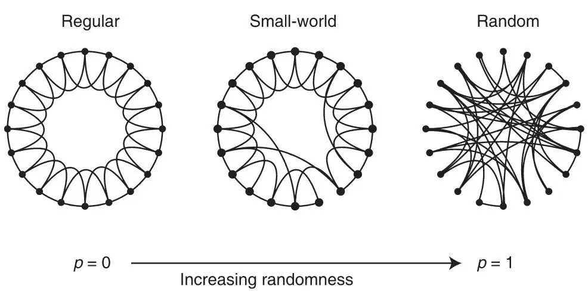
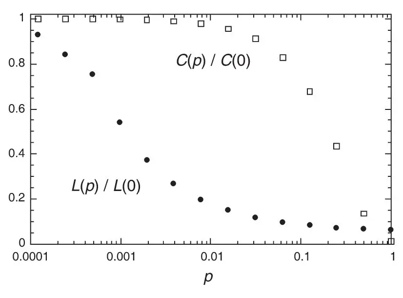
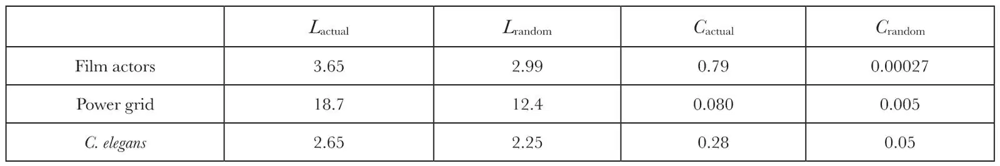
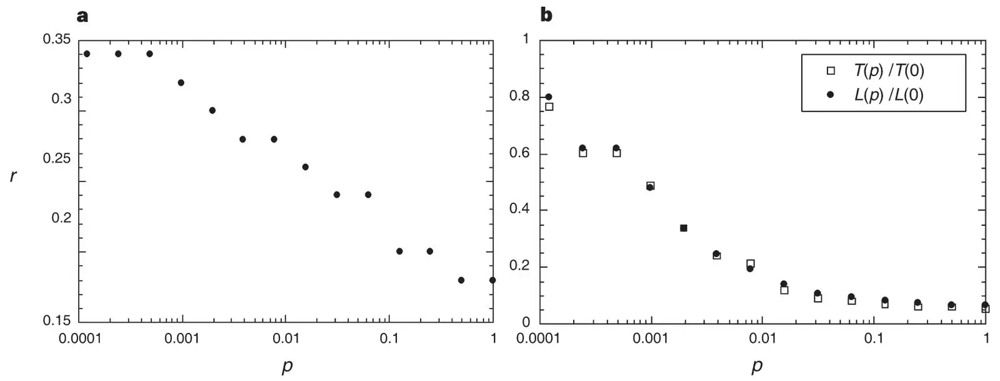

中文
中文D. J. Watts and S. H. Strogatz
Editor’s Note
We live in a world of networks, from human social networks and biological food webs to neural systems, transportation networks and the modern Internet. In this paper, Duncan Watts and Steven Strogatz demonstrate that these networks often share surprising architectural similarities. Most notably, they are “small worlds”, in that only a few steps are needed to move along links from any one point to another, even in networks containing an enormous number of elements. Such networks also tend to be highly “clustered”, with many redundant paths, making them connected wholes that are resilient to the removal of links. This paper stimulated an explosion of work on complex networks by providing a new conceptual framework for analysing them. 中文
Networks of coupled dynamical systems have been used to model biological oscillators1-4, Josephson junction arrays5,6, excitable media7, neural networks8-10, spatial games11, genetic control networks12 and many other self-organizing systems. Ordinarily, the connection topology is assumed to be either completely regular or completely random. But many biological, technological and social networks lie somewhere between these two extremes. Here we explore simple models of networks that can be tuned through this middle ground: regular networks “rewired” to introduce increasing amounts of disorder. We find that these systems can be highly clustered, like regular lattices, yet have small characteristic path lengths, like random graphs. We call them “small-world” networks, by analogy with the small-world phenomenon13,14 (popularly known as six degrees of separation15). The neural network of the worm Caenorhabditis elegans, the power grid of the western United States, and the collaboration graph of film actors are shown to be small-world networks. Models of dynamical systems with small-world coupling display enhanced signal-propagation speed, computational power, and synchronizability. In particular, infectious diseases spread more easily in small-world networks than in regular lattices. 中文
TO interpolate between regular and random networks, we consider the following random rewiring procedure (Fig. 1). Starting from a ring lattice with n vertices and k edges per vertex, we rewire each edge at random with probability p. This construction allows us to “tune” the graph between regularity (p=0) and disorder (p=1), and thereby to probe the intermediate region 0<p<1, about which little is known. 中文

Fig. 1. Random rewiring procedure for interpolating between a regular ring lattice and a random network, without altering the number of vertices or edges in the graph. We start with a ring of n vertices, each connected to its k nearest neighbours by undirected edges. (For clarity, n=20 and k=4 in the schematic examples shown here, but much larger n and k are used in the rest of this Letter.) We choose a vertex and the edge that connects it to its nearest neighbour in a clockwise sense. With probability p, we reconnect this edge to a vertex chosen uniformly at random over the entire ring, with duplicate edges forbidden; otherwise we leave the edge in place. We repeat this process by moving clockwise around the ring, considering each vertex in turn until one lap is completed. Next, we consider the edges that connect vertices to their second-nearest neighbours clockwise. As before, we randomly rewire each of these edges with probability p, and continue this process, circulating around the ring and proceeding outward to more distant neighbours after each lap, until each edge in the original lattice has been considered once. (As there are nk/2 edges in the entire graph, the rewiring process stops after k / 2 laps.) Three realizations of this process are shown, for different values of p. For p=0, the original ring is unchanged; as p increases, the graph becomes increasingly disordered until for p=1, all edges are rewired randomly. One of our main results is that for intermediate values of p, the graph is a small-world network: highly clustered like a regular graph, yet with small characteristic path length, like a random graph. (See Fig. 2.) 中文

Fig. 2. Characteristic path length L(p) and clustering coefficient C(p) for the family of randomly rewired graphs described in Fig. 1. Here L is defined as the number of edges in the shortest path between two vertices, averaged over all pairs of vertices. The clustering coefficient C(p) is defined as follows. Suppose that a vertex v has kv neighbours; then at most kv (kv－1) / 2 edges can exist between them (this occurs when every neighbour of v is connected to every other neighbour of v). Let Cv denote the fraction of these allowable edges that actually exist. Define C as the average of Cv over all v. For friendship networks, these statistics have intuitive meanings: L is the average number of friendships in the shortest chain connecting two people; Cv reflects the extent to which friends of v are also friends of each other; and thus C measures the cliquishness of a typical friendship circle. The data shown in the figure are averages over 20 random realizations of the rewiring process described in Fig. 1, and have been normalized by the values L(0), C(0) for a regular lattice. All the graphs have n=1,000 vertices and an average degree of k=10 edges per vertex. We note that a logarithmic horizontal scale has been used to resolve the rapid drop in L(p), corresponding to the onset of the small-world phenomenon. During this drop, C(p) remains almost constant at its value for the regular lattice, indicating that the transition to a small world is almost undetectable at the local level. 中文
We quantify the structural properties of these graphs by their characteristic path length L(p) and clustering coefficient C(p), as defined in Fig. 2 legend. Here L(p) measures the typical separation between two vertices in the graph (a global property), whereas C(p) measures the cliquishness of a typical neighbourhood (a local property). The networks of interest to us have many vertices with sparse connections, but not so sparse that the graph is in danger of becoming disconnected. Specifically, we require n ≫ k ≫ ln(n) ≫ 1, where k ≫ ln(n) guarantees that a random graph will be connected16. In this regime, we find that L~n / 2k ≫ 1 and C~3 / 4 as p→0, while L≈Lrandom~ln(n) /ln(k) and C≈Crandom~k / ≪ 1 as p→1. Thus the regular lattice at p=0 is a highly clustered, large world where L grows linearly with n, whereas the random network at p=1 is a poorly clustered, small world where L grows only logarithmically with n. These limiting cases might lead one to suspect that large C is always associated with large L, and small C with small L. 中文
On the contrary, Fig. 2 reveals that there is a broad interval of p over which L(p) is almost as small as Lrandom yet C(p) ≫ Crandom. These small-world networks result from the immediate drop in L(p) caused by the introduction of a few long-range edges. Such “short cuts” connect vertices that would otherwise be much farther apart than Lrandom. For small p, each short cut has a highly nonlinear effect on L, contracting the distance not just between the pair of vertices that it connects, but between their immediate neighbourhoods, neighbourhoods of neighbourhoods and so on. By contrast, an edge removed from a clustered neighbourhood to make a short cut has, at most, a linear effect on C; hence C(p) remains practically unchanged for small p even though L(p) drops rapidly. The important implication here is that at the local level (as reflected by C(p)), the transition to a small world is almost undetectable. To check the robustness of these results, we have tested many different types of initial regular graphs, as well as different algorithms for random rewiring, and all give qualitatively similar results. The only requirement is that the rewired edges must typically connect vertices that would otherwise be much farther apart than Lrandom. 中文
The idealized construction above reveals the key role of short cuts. It suggests that the small-world phenomenon might be common in sparse networks with many vertices, as even a tiny fraction of short cuts would suffice. To test this idea, we have computed L and C for the collaboration graph of actors in feature films (generated from data available at http://us.imdb.com), the electrical power grid of the western United States, and the neural network of the nematode worm C. elegans17. All three graphs are of scientific interest. The graph of film actors is a surrogate for a social network18, with the advantage of being much more easily specified. It is also akin to the graph of mathematical collaborations centred, traditionally, on P. Erdös (partial data available at http://www.acs.oakland.edu / ~grossman / erdoshp.html). The graph of the power grid is relevant to the efficiency and robustness of power networks19. And C. elegans is the sole example of a completely mapped neural network. 中文
Table 1 shows that all three graphs are small-world networks. These examples were not hand-picked; they were chosen because of their inherent interest and because complete wiring diagrams were available. Thus the small-world phenomenon is not merely a curiosity of social networks13,14 nor an artefact of an idealized model—it is probably generic for many large, sparse networks found in nature. 中文
Table 1. Empirical examples of small-world networks

Characteristic path length L and clustering coefficient C for three real networks, compared to random graphs with the same number of vertices (n) and average number of edges per vertex (k). (Actors: n=225,226, k=61. Power grid: n=4,941, k=2.67. C. elegans: n=282, k=14.) The graphs are defined as follows. Two actors are joined by an edge if they have acted in a film together. We restrict attention to the giant connected component16 of this graph, which includes ~90% of all actors listed in the Internet Movie Database (available at http://us.imdb.com), as of April 1997. For the power grid, vertices represent generators, transformers and substations, and edges represent high-voltage transmission lines between them. For C. elegans, an edge joins two neurons if they are connected by either a synapse or a gap junction. We treat all edges as undirected and unweighted, and all vertices as identical, recognizing that these are crude approximations. All three networks show the small-world phenomenon: L≥Lrandom but C ≫ Crandom. 中文
We now investigate the functional significance of small-world connectivity for dynamical systems. Our test case is a deliberately simplified model for the spread of an infectious disease. The population structure is modelled by the family of graphs described in Fig. 1. At time t=0, a single infective individual is introduced into an otherwise healthy population. Infective individuals are removed permanently (by immunity or death) after a period of sickness that lasts one unit of dimensionless time. During this time, each infective individual can infect each of its healthy neighbours with probability r. On subsequent time steps, the disease spreads along the edges of the graph until it either infects the entire population, or it dies out, having infected some fraction of the population in the process. 中文
Two results emerge. First, the critical infectiousness rhalf, at which the disease infects half the population, decreases rapidly for small p (Fig. 3a). Second, for a disease that is sufficiently infectious to infect the entire population regardless of its structure, the time T(p) required for global infection resembles the L(p) curve (Fig. 3b). Thus, infectious diseases are predicted to spread much more easily and quickly in a small world; the alarming and less obvious point is how few short cuts are needed to make the world small. 中文
Our model differs in some significant ways from other network models of disease spreading20-24. All the models indicate that network structure influences the speed and extent of disease transmission, but our model illuminates the dynamics as an explicit function of structure (Fig. 3), rather than for a few particular topologies, such as random graphs, stars and chains20-23. In the work closest to ours, Kretschmar and Morris24 have shown that increases in the number of concurrent partnerships can significantly accelerate the propagation of a sexually-transmitted disease that spreads along the edges of a graph. All their graphs are disconnected because they fix the average number of partners per person at k=1. An increase in the number of concurrent partnerships causes faster spreading by increasing the number of vertices in the graph’s largest connected component. In contrast, all our graphs are connected; hence the predicted changes in the spreading dynamics are due to more subtle structural features than changes in connectedness. Moreover, changes in the number of concurrent partners are obvious to an individual, whereas transitions leading to a smaller world are not. 中文

Fig. 3. Simulation results for a simple model of disease spreading. The community structure is given by one realization of the family of randomly rewired graphs used in Fig. 1. a, Critical infectiousness rhalf, at which the disease infects half the population, decreases with p. b, The time T(p) required for a maximally infectious disease (r=1) to spread throughout the entire population has essentially the same functional form as the characteristic path length L(p). Even if only a few per cent of the edges in the original lattice are randomly rewired, the time to global infection is nearly as short as for a random graph. 中文
We have also examined the effect of small-world connectivity on three other dynamical systems. In each case, the elements were coupled according to the family of graphs described in Fig. 1. (1) For cellular automata charged with the computational task of density classification25, we find that a simple “majority-rule” running on a small-world graph can outperform all known human and genetic algorithm-generated rules running on a ring lattice. (2) For the iterated, multi-player “Prisoner’s dilemma”11 played on a graph, we find that as the fraction of short cuts increases, cooperation is less likely to emerge in a population of players using a generalized “tit-for-tat”26 strategy. The likelihood of cooperative strategies evolving out of an initial cooperative / non-cooperative mix also decreases with increasing p. (3) Small-world networks of coupled phase oscillators synchronize almost as readily as in the mean-field model2, despite having orders of magnitude fewer edges. This result may be relevant to the observed synchronization of widely separated neurons in the visual cortex27 if, as seems plausible, the brain has a small-world architecture. 中文
We hope that our work will stimulate further studies of small-world networks. Their distinctive combination of high clustering with short characteristic path length cannot be captured by traditional approximations such as those based on regular lattices or random graphs. Although small-world architecture has not received much attention, we suggest that it will probably turn out to be widespread in biological, social and man-made systems, often with important dynamical consequences. 中文
(393, 440-442; 1998)
Duncan J. Watts* & Steven H. Strogatz
Department of Theoretical and Applied Mechanics, Kimball Hall, Cornell University, Ithaca, New York 14853, USA
* Present address: Paul F. Lazarsfeld Center for the Social Sciences, Columbia University, 812 SIPA Building, 420 W118 St, New York, New York 10027, USA.
Received 27 November 1997; accepted 6 April 1998.
References:
1. Winfree, A. T. The Geometry of Biological Time (Springer, New York, 1980).
2. Kuramoto, Y. Chemical Oscillations, Waves, and Turbulence (Springer, Berlin, 1984).
3. Strogatz, S. H. & Stewart, I. Coupled oscillators and biological synchronization. Sci. Am. 269(6), 102-109 (1993).
4. Bressloff, P. C., Coombes, S. & De Souza, B. Dynamics of a ring of pulse-coupled oscillators: a group theoretic approach. Phys. Rev. Lett. 79, 2791-2794 (1997).
5. Braiman, Y., Lindner, J. F. & Ditto, W. L. Taming spatiotemporal chaos with disorder. Nature 378, 465-467 (1995).
6. Wiesenfeld, K. New results on frequency-locking dynamics of disordered Josephson arrays. Physica B 222, 315-319 (1996).
7. Gerhardt, M., Schuster, H. & Tyson, J. J. A cellular automaton model of excitable media including curvature and dispersion. Science 247, 1563-1566 (1990).
8. Collins, J. J., Chow, C. C. & Imhoff, T. T. Stochastic resonance without tuning. Nature 376, 236-238 (1995).
9. Hopfield, J. J. & Herz, A. V. M. Rapid local synchronization of action potentials: Toward computation with coupled integrate-and-fire neurons. Proc. Natl Acad. Sci. USA 92, 6655-6662 (1995).
10. Abbott, L. F. & van Vreeswijk, C. Asynchronous states in neural networks of pulse-coupled oscillators. Phys. Rev. E 48(2), 1483-1490 (1993).
11. Nowak, M. A. & May, R. M. Evolutionary games and spatial chaos. Nature 359, 826-829 (1992).
12. Kauffman, S. A. Metabolic stability and epigenesis in randomly constructed genetic nets. J. Theor. Biol. 22, 437-467 (1969).
13. Milgram, S. The small world problem. Psychol. Today 2, 60-67 (1967).
14. Kochen, M. (ed.) The Small World (Ablex, Norwood, NJ, 1989).
15. Guare, J. Six Degrees of Separation: A Play (Vintage Books, New York, 1990).
16. Bollabás, B. Random Graphs (Academic, London, 1985).
17. Achacoso, T. B. & Yamamoto, W. S. AY’s Neuroanatomy of C. elegans for Computation (CRC Press, Boca Raton, FL, 1992).
18. Wasserman, S. & Faust, K. Social Network Analysis: Methods and Applications (Cambridge Univ. Press, 1994).
19. Phadke, A. G. & Thorp, J. S. Computer Relaying for Power Systems (Wiley, New York, 1988).
20. Sattenspiel, L. & Simon, C. P. The spread and persistence of infectious diseases in structured populations. Math. Biosci. 90, 341-366 (1988).
21. Longini, I. M. Jr A mathematical model for predicting the geographic spread of new infectious agents. Math. Biosci. 90, 367-383 (1988).
22. Hess, G. Disease in metapopulation models: implications for conservation. Ecology 77, 1617-1632 (1996).
23. Blythe, S. P., Castillo-Chavez, C. & Palmer, J. S. Toward a unified theory of sexual mixing and pair formation. Math. Biosci. 107, 379-405 (1991).
24. Kretschmar, M. & Morris, M. Measures of concurrency in networks and the spread of infectious disease. Math. Biosci. 133, 165-195 (1996).
25. Das, R., Mitchell, M. & Crutchfield, J. P. in Parallel Problem Solving from Nature (eds Davido, Y., Schwefel, H.-P. & Männer, R.) 344-353 (Lecture Notes in Computer Science 866, Springer, Berlin, 1994).
26. Axelrod, R. The Evolution of Cooperation (Basic Books, New York, 1984).
27. Gray, C. M., König, P., Engel, A. K. & Singer, W. Oscillatory responses in cat visual cortex exhibit intercolumnar synchronization which reflects global stimulus properties. Nature 338, 334-337 (1989).
Acknowledgements. We thank B. Tjaden for providing the film actor data, and J. Thorp and K. Bae for the Western States Power Grid data. This work was supported by the US National Science Foundation (Division of Mathematical Sciences).
Correspondence and requests for materials should be addressed to D.J.W. (e-mail: djw24@columbia.edu).